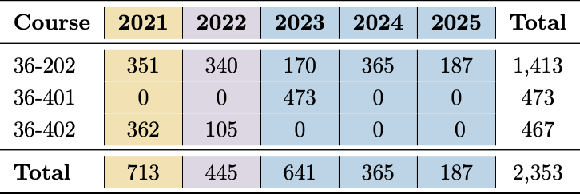
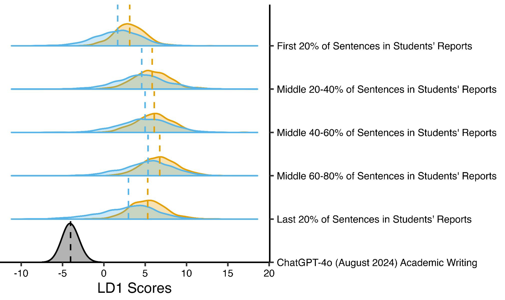
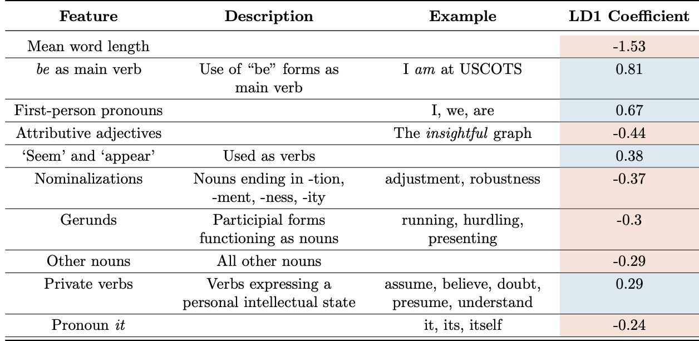
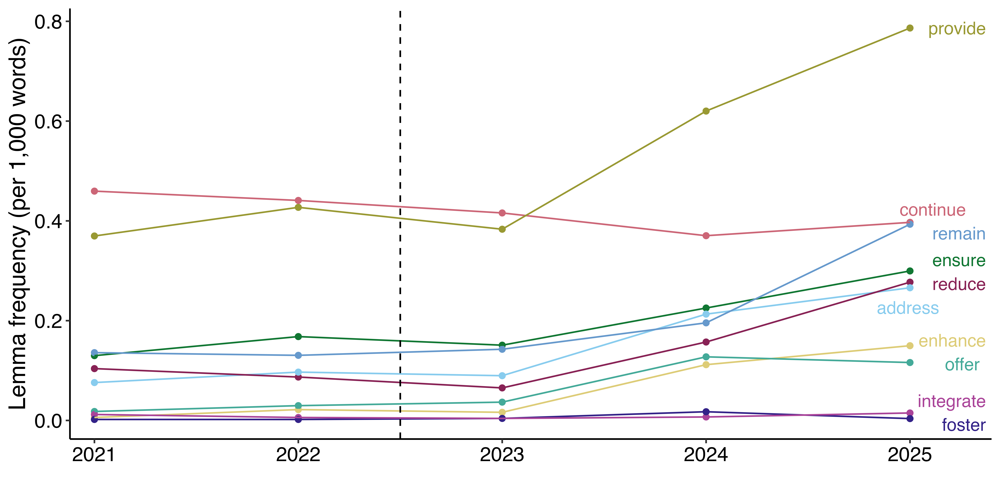
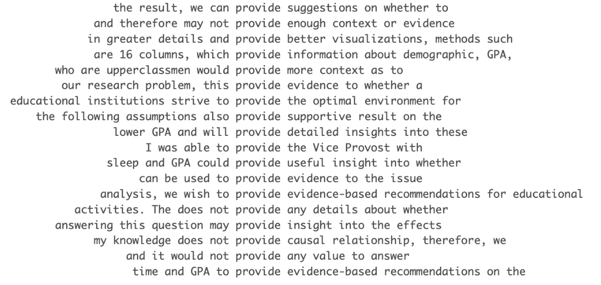

Analyzing Statistics Students’ Writing Before and After the Emergence of Large Language Models
Large Language Models (LLMs) have become ubiquitous in academic settings, particularly for writing (Baek, Tate, and Warschauer 2024). Recently, Reinhart et al. (2024) identified systematic differences between LLM and human writing by leveraging Biber feature and lemma usage rates.
- Biber features are 67 rhetorical features (e.g. past tense, participial clauses, mean word length) used to characterize texts (Biber 1988).
- Lemma usage implies the usage of the root form of a word (e.g. ensure, ensured, and ensures all have the same lemma form of ensure).
The overarching goal of our project is to identify whether (and if so, how) students’ statistics writing has systematically shifted toward being more similar to LLM academic writing since LLMs became widely accessible in 2022.
Our data contains two corpora. The HAP-E Corpus contains 1,227 documents for which ChatGPT-4o (August 2024) was asked to generate the next 500 words (in the same tone and style) when prompted with a piece of academic writing (Brown 2024). The Student Corpus contains 2,353 student reports from three undergraduate statistics courses at Carnegie Mellon University. 36-202: Methods for Statistics & Data Science is typically the second statistics course students take. 36-401: Modern Regression and 36-402: Advanced Methods for Data Analysis are advanced courses students take in their junior or senior year. Students are given a dataset and asked to answer a domain question with a report in the IMRaD format. The average report length is 1,700 words. All reports are anonymized and collected under an IRB.

Comparing Rhetorical Features
We start by extracting Biber feature rates (per 1,000 words) for each document in the HAP-E and Student Corpora. We then conduct linear discriminant analysis (LDA) on the ChatGPT and student reports from 2021 using standardized Biber feature rates across all documents. Throughout our analysis, we treat 2021 as a “pre-LLM era”, 2022 as an intermediate year, and 2023-2025 reports as being from a time when LLMs were utilized by and accesible to students. Using the standardized Biber feature rates, we then project 2022-2025 writing onto the first linear discriminant (LD1) space and observe the resulting distribution of LD1 scores. We do this process separately for introductory (36-202) and advanced classes (36-401/402). Due to the advanced classes having fewer reports—particularly none in 2024-2025—the remainder of our analysis focuses on 36-202.

Key takeaways from Figure 1 include (a) 36-202 students are writing more like ChatGPT with each year, on average. We also observe more variability in LD1 scores in more recent years, suggesting that some students rely on ChatGPT for writing portion(s) of their report while other may not use it all.
In order to better understand what portions of the report students may use LLMs for, we break the report into five sections. We let the first 20% of sentences represent the introduction of the report, 20-80% represent the middle (EDA/methods) of the report, and the final 20% of sentences represent the conclusion. The results are displayed in Figure 2.

Figure 2 displays that across all sections of the report, students’ writing style is more similiar to ChatGPT’s writing style in 2023-2025 than it was in 2021, aligning with Figure 1. Breaking it down by section, even in 2021 (pre LLMs), the style of writing for the introduction and conclusion was more similar to ChatGPT’s style of writing than the methods section of the report. However, going from 2021 to 2023-2025, we see the distribution of LD1 scores shift toward ChatGPT’s LD1 distribution the most for the introduction and conclusion of the report. This implies these sections of the report are likely where students are using LLMs the most1.
You may be wondering what features of writing are more ChatGPT-like and what features are more human-like. Table 2 displays our top ten standardized Biber features that proved to be most helpful for classifying ChatGPT and student writing in our linear discriminant analysis. A negative LD1 coefficient indicates that the feature is more prevalent in ChatGPT writing than 2021 student writing, while a postive feature indicates the opposite. A few features that make sense to me: on average, ChatGPT uses longer words and more attributive adjectives, while students tend use be as a main verb and use first-person pronouns more often. Note that Biber features do not take punctuation into account, which I mention because LLMs like to use em dashes. This would be something additional to look into in the future.

Comparing Lemma Usage
We have looked at rhetorical features, but what about the words themselves? After hearing that LLMs at one point used words like delve, tapestry, or commraderie a lot, we were curious to see if our student writing saw an uptick in any of ChatGPT’s favorite verbs. To do so, we identify ChatGPT’s top 50 favorite verbs by doing a simple count of how many times each verb was used in the HAP-E corpus, removing auxiliary verbs. We then find the rate (per 1000 words) at which these verbs are used in the student corpus each year. Figure 3 displays how the frequency of usage of ChatGPT’s top ten favorite verbs have changed in student reports over recent years. Several of these verbs (e.g. provide, remain, ensure, reduce, address, enhance, offer) have seen noticeable increases.

We go on to perform a keyness analysis to identify which of the 50 verb lemmas have a significant positive frequency change from 2021 to 2023-2025 in the student writing. A keyness analysis is a special kind of chi-square test to compare observed and expected frequencies in text. We find that 75% of these 50 verb lemmas increased frequency in 36-202 student reports from 2021 to 2023-2025, and 33% of these positive changes were statistically significant after adjusting for multiple testing using the Bonferroni correction.
We want to make sure that the topic of the report does not play into student word choice (e.g. a prompt “analyze the effect of a reduction in required classes on…” may have the word reduce used very often). Luckily, in 36-202, students were given the same set of datasets and prompts to choose from each year. We additionally conduct a concordance analysis, pulling out the four words prior to and following each of top ten verbs in order to ensure the usage of these verbs is not context dependent. Figure 4 shows a sample of the ways in which provide was used in 36-202 reports in 2025. We see the usage does not appear to be context dependent, and we additionally observe repeated use cases such as “provide evidence-based recommendations”.

Concluding Thoughts
We see there has been a systematic shift in both the style and vocabulary of students’ statistics reports toward ChatGPT in both lower and upper division courses at Carnegie Mellon in the era of LLMs. The writing style for students’ introductions and conclusions has particularly become more similar to ChatGPT’s writing style, on average.
We are still figuring out the next steps for this project, but it might be interesting to compose a ChatGPT corpus where each text is a report generated by the prompt of the assignment. This may be a more fair comparison to the student writing, as opposed to text generated by ChatGPT to meet the style and tone of expert academic writing. If this corpus was used in the linear discrminant analysis, I would expect an even larger shift of the distribution of LD1 scores for 2023-2025 reports toward to the ChatGPT distribution. Additionally, I would be curious to see if ChatGPT writing is “good”. If, using Biber features and linear discriminant analysis, we were to compare both student reports in the LLM and pre-LLM era to expert academic writing, would one perform better than the other? Finally, while it would be difficult to make happen, it would also be interesting to see how these results vary by institution (e.g. liberal arts versus R1 institutions).
While the extensions above may help provide more information, that isn’t going to change what is clear—students are using LLMs for writing. Sara and I are more curious about what the means. We both went to liberal arts colleges where writing (e.g. data analysis projects, reports, portfolios, etc) was at the center of our learning. Personally, writing-to-learn assignments were the place where I would process concepts and immediately figure out my pitfalls when I could not figure out how to explain something. The big question (that I think everyone has) is: do these assignments need modification in an era of LLMs? If so, how do we restructure these assignments to better support student learning?
At USCOTS, it was really interesting to hear ideas on this. Some thoughts:
- Turn to alternative forms of assessment, such as oral exams. See my USCOTS reflections for a discussion the pros and cons of oral exams.
- In short, I think this could be a good option for advanced capstone classes at liberal arts colleges, but it still may not offer the all of the same benefits as take home data analysis projects (the student has less freedom in topic, cannot produce something they can share to network or look back on to learn from, may have oral exam anxiety).
- Have students write a data analysis report during classtime—or more realistically, part of a report. We observed that students are most likely to offload writing the introduction and conclusion to LLMs, so potentially we could provide some already done EDA plots, methods, and results to the student and have them write the introduction or conclusion during classtime on paper.
- There could also be a class discussion where as a group you read some pieces of writing and critique them (kind of like a peer review) so students think more about carefully about their writing style and process. Again, this does not yield all the same benefits as a take home data analysis project, but it is an idea.
- Try some AI policy—I liked Nick Horton’s idea where he asked the students in his class to develop an AI policy on the first day of the semester, he refined it, then they discussed it as a group again and students were expected to adhere to it.
- Not be pessimisstic, I personally don’t this would work at a non-liberal arts college. I might be biased though…
- Finally and optimistically, maybe some form of pitching the laundry list of reasons why we shouldn’t use LLMs for writing reports could help solve the problem.
These are all just my thoughts, I can’t say I know much about teaching or what I would actually do if I were a professor, so I am curious to learn more and continue to hear other people’s thoughts! Thanks so much for reading if you got this far, and please feel free to reach out to me at efranke@andrew.cmu.edu if you have any thoughts :)
Acknowledgements
Thanks so much to Alex Reinhart for his support on this project. We are also grateful to the TeachStat working group at Carnegie Mellon for their valuable feedback and suggestions, and Eric Shau for pre-processing the student reports.
References
Footnotes
Anecdotally, this makes sense. I have had at least four people tell me they are using LLMs for their introductions/conclusions in the last couple of months.↩︎